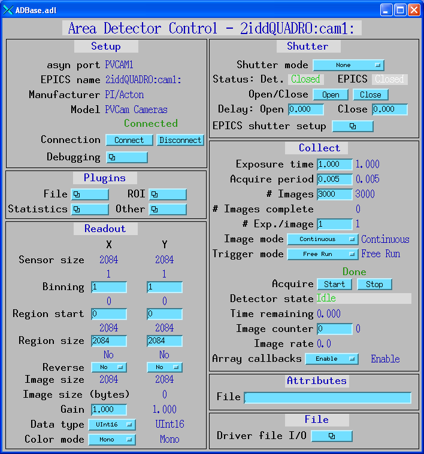

ADPvCam
- author:
Brian Tieman(Argonne National Laboratory), John Hammonds(Argonne National Laboratory), Mark Rivers(University of Chicago)
Table of Contents
Introduction
This is an EPICS areaDetector driver for the Roper Scientific detectors, which includes all cameras from Photometrics and most but not all cameras from Princeton Instruments The driver is based upon the PVCAM library from Photometrics, and runs on Microsoft Windows and Linux. This driver is complementary to the areaDetector Roper driver. That driver uses the Microsoft COM interface to control the Roper WinView program. This driver works at a lower level, communicating instead with the PVCAM library layer. PVCAM supports all Photometrics cameras, and many, but not all, Princeton Instruments cameras.
ADD ADDTIONAL INTRODUCTORY TEXT HERE.
This driver inherits from ADDriver. It implements many of the parameters in asynNDArrayDriver.h and in ADArrayDriver.h. It also implements a number of parameters that are specific to the Roper detectors. The pvCam class documentation describes this class in detail.
Implementation of standard driver parameters
The following table describes how the PVCAM driver implements some of the standard driver parameters.
DOCUMENT IMPLEMENTATION OF STANDARD DRIVER PARAMETERS IN THIS TABLE
Implementation of Parameters in asynNDArrayDriver.h and ADDriver.h, and EPICS Record Definitions in ADBase.template and NDFile.template |
||
|---|---|---|
Parameter index variable |
EPICS record name |
Description |
ADNumImages |
$(P)$(R)NumImages |
Controls the number of images to acquire when ADImageMode is ADImageMultiple. |
PVCAM specific parameters
The PVCAM driver implements the following parameters in addition to
those in asynNDArrayDriver.h and ADDriver.h. Note that to reduce the
width of this table the parameter index variable names have been split
into 2 lines, but these are just a single name, for example
PVCamInitDetector.
Parameter Definitions in pvcamSrc.h and EPICS Record Definitions in pvCam.template |
||||||
|---|---|---|---|---|---|---|
Parameter index variable |
asyn interface |
Access |
Description |
drvInfo string |
EPICS record name |
EPICS record type |
PVCam, InitDetector |
asynInt32 |
r/w |
Initializes the detector |
PVCAM_INITIALIZE_DETECTOR |
$(P)$(R)Initialize, $(P)$(R)Initialize_RBV |
longout, longin |
PVCam, InitSlot1Cam |
asynOctet |
r |
String describing 1st found detector |
PVCAM_SLOT1 |
$(P)$(R)Slot1_RBV |
stringin |
PVCam, Slot2Cam |
asynOctet |
r |
String describing 2nd found detector |
PVCAM_SLOT2 |
$(P)$(R)Slot2_RBV |
stringin |
PVCam, Slot3Cam |
asynOctet |
r |
String describing 3rd found detector |
PVCAM_SLOT3 |
$(P)$(R)Slot3_RBV |
stringin |
PVCam, DetectorSelected |
asynInt32 |
r/w |
Index of selected detector |
PVCAM_DETECTORSELECTED |
$(P)$(R)DetecorSelected, $(P)$(R)DetecorSelected_RBV |
longout, longin |
PVCam, ChipNameRBV |
asynOctet |
r |
String describing CCD chip |
PVCAM_CHIPNAME |
$(P)$(R)ChipName_RBV |
stringin |
PVCam, NumParallelPixelsRBV |
asynInt32 |
r |
Parallel size of the CCD in active rows |
PVCAM_NUMPARALLELPIXELS |
$(P)$(R)NumParallelPixels_RBV |
longin |
PVCam, NumSerialPixelsRBV |
asynInt32 |
r |
Serial size of the CCD |
PVCAM_NUMSERIAL |
$(P)$(R)NumSerialPixels_RBV |
longin |
PVCam, PixelParallelSizeRBV |
asynInt32 |
r |
Size of the pixel in parallel direction in nanometers |
PVCAM_PIXELPARALLELSIZE |
$(P)$(R)PixelParallelSize_RBV |
longin |
PVCam, PixelSerialSizeRBV |
asynInt32 |
r |
Size of the pixel in Serial direction in nanometers |
PVCAM_PIXELSERIALSIZE |
$(P)$(R)PixelSerialSize_RBV |
longin |
PVCam, ChipHeightRBV |
asynFloat64 |
r |
Height of CCD in mm |
PVCAM_CHIPHEIGHT |
$(P)$(R)ChipHeight_RBV |
longin |
PVCam, ChipWidthRBV |
asynFloat64 |
r |
Width of CCD in mm |
PVCAM_CHIPWIDTH |
$(P)$(R)ChipWidth_RBV |
longin |
PVCam, PixelParallelDistRBV |
asynInt32 |
r |
Pixel-to-pixel distance, in parallel direction, in nanometers |
PVCAM_PIXELPARALLELDIST |
$(P)$(R)PixelParallelDist_RBV |
longin |
PVCam, PixelSerialDistRBV |
asynInt32 |
r |
Pixel-to-pixel distance, in serial direction, in nanometers |
PVCAM_PIXELSERIALDIST |
$(P)$(R)PixelSerialDist_RBV |
longin |
PVCam, PostMaxRBV |
asynInt32 |
r |
PVCAM_POSTMASK |
$(P)$(R)PostMask_RBV |
longin |
|
PVCam, PreMaskRBV |
asynInt32 |
r |
PVCAM_PREMASK |
$(P)$(R)PreMask_RBV |
longin |
|
PVCam, PostScanRBV |
asynInt32 |
r |
PVCAM_POSTSCAN |
$(P)$(R)PostScan_RBV |
longin |
|
PVCam, PreScanRBV |
asynInt32 |
r |
PVCAM_PRESCAN |
$(P)$(R)PreScan_RBV |
longin |
|
PVCam, NumPortsRBV |
asynInt32 |
r |
PVCAM_NUMPORTS |
$(P)$(R)NumPorts_RBV |
longin |
|
PVCam, FullWellCapacityRBV |
asynInt32 |
r |
PVCAM_FULLWELLCAPACITY |
$(P)$(R)FullWellCapacity_RBV |
longin |
|
PVCam, FrameTransferCapableRBV |
asynInt32 |
r |
PVCAM_FRAMETRANSFERCAPABLE |
$(P)$(R)FrameTransferCapable_RBV |
longin |
|
PVCam, NumSpeedTableEntriesRBV |
asynInt32 |
r |
PVCAM_NUMSPEEDTABLEENTRIES |
$(P)$(R)NumSpeedTableEntries_RBV |
longin |
|
PVCam, SpeedTableIndex, SpeedTableIndexRBV |
asynInt32 |
r/w |
PVCAM_SPEEDTABLEINDEX, PVCAM_SPEEDTABLEINDEX_RBV |
$(P)$(R)SpeedTableIndex, $(P)$(R)SpeedTableIndex_RBV |
longout, longin |
|
PVCam, BitDepthRBV |
asynInt32 |
r |
PVCAM_BITDEPTH |
$(P)$(R)BitDepth_RBV |
longin |
|
PVCam, PixelTimeRBV |
asynInt32 |
r |
PVCAM_PIXELTIME |
$(P)$(R)PixelTime_RBV |
longin |
|
PVCam, GainIndex, GainIndexRBV |
asynInt32 |
r |
PVCAM_GAININDEX, PVCAM_GAININDEX_RBV |
$(P)$(R)GainIndex, $(P)$(R)GainIndex_RBV |
longin |
|
PVCam, MaxGainIndexRBV |
asynInt32 |
r |
PVCAM_MAXGAININDEX |
$(P)$(R)MaxGainIndex_RBV |
longin |
|
PVCam, MinShutterOpenDelayRBV |
asynInt32 |
r |
PVCAM_MINSHUTTEROPENDELAY |
$(P)$(R)MinShutterOpenDelay_RBV |
longin |
|
PVCam, MaxShutterOpenDelayRBV |
asynInt32 |
r |
PVCAM_MAXSHUTTEROPENDELAY |
$(P)$(R)MaxShutterOpenDelay_RBV |
longin |
|
PVCam, MinShutterCloseDelayRBV |
asynInt32 |
r |
PVCAM_MINSHUTTERCLOSEDELAY |
$(P)$(R)MinShutterCloseDelay_RBV |
longin |
|
PVCam, MaxShutterCloseDelayRBV |
asynInt32 |
r |
PVCAM_MAXSHUTTERCLOSEDELAY |
$(P)$(R)MaxShutterCloseDelay_RBV |
longin |
|
PVCam, ShutterOpenDelay, ShutterOpenDelayRBV |
asynInt32 |
r/w |
PVCAM_SHUTTEROPENDELAY, PVCAM_SHUTTEROPENDELAY_RBV |
$(P)$(R)OpenDelay, $(P)$(R)OpenDelay_RBV |
longout, longin |
|
PVCam, ShutterCloseDelay, ShutterCloseDelayRBV |
asynInt32 |
r/w |
PVCAM_SHUTTERCLOSEDELAY, PVCAM_SHUTTERCLOSEDELAY_RBV |
$(P)$(R)CloseDelay, $(P)$(R)CloseDelay_RBV |
longout, longin |
|
PVCam, MeasuredTemperatureRBV |
asynFloat64 |
r |
PVCAM_MEASUREDTEMPERATURE_RBV |
$(P)$(R)MeasuredTemperature_RBV |
longin |
|
PVCam, MinTemperatureRBV |
asynFloat64 |
r |
PVCAM_MINTEMPERATURE |
$(P)$(R)MinSetTemperature |
longin |
|
PVCam, MaxTemperatureRBV |
asynFloat64 |
r |
PVCAM_MAXTEMPERATURE |
$(P)$(R)MaxSetTemperature |
longin |
|
PVCam, SetTemperature, SetTemperatureRBV |
asynFloat64 |
r/w |
PVCAM_SETTEMPERATURE, PVCAM_SETTEMPERATURE_RBV |
$(P)$(R)SetTemperature, $(P)$(R)SetTemperature_RBV |
longin |
|
PVCam, DetectorMode, DetectorModeRBV |
asynInt32 |
r/w |
PVCAM_DETECTORMODE, PVCAM_DETECTORMODE_RBV |
$(P)$(R)DetectorMode, $(P)$(R)DetectorMode_RBV |
longin |
|
PVCam, TriggerMode, TriggerModeRBV |
asynInt32 |
r/w |
PVCAM_TRIGGERMODE_RBV, PVCAM_TRIGGERMODE_RBV |
$(P)$(R)TriggerMode, $(P)$(R)TriggerMode_RBV |
longin |
|
PVCam, TriggerEdge, TriggerEdgeRBV |
asynInt32 |
r/w |
PVCAM_TRIGGEREDGE_RBV, PVCAM_TRIGGEREDGE_RBV |
$(P)$(R)TriggerEdge, $(P)$(R)TriggerEdge_RBV |
longin |
|
PVCam, CamFirmwareVersRBV |
asynOctetRead |
r |
PVCAM_CAMFIRMWAREVERS_RBV |
$(P)$(R)CameraFirmwareVers_RBV |
longin |
|
PVCam, PCIFWVersRBV |
asynInt32 |
r |
PVCAM_PCIFWVERS_RBV |
$(P)$(R)PCIFWVers_RBV |
longin |
|
PVCam, HeadSerialNumRBV |
asynOctetRead |
r |
PVCAM_HEADSERIALNUM_RBV |
$(P)$(R)HeadSerialNum_RBV |
longin |
|
PVCam, SerialNumRBV |
asynInt32 |
r |
PVCAM_SERIALNUM_RBV |
$(P)$(R)SerialNum_RBV |
longin |
|
PVCam, PVCamVersRBV |
asynOctetRead |
r |
PVCAM_PVCAMVERS_RBV |
$(P)$(R)PVCamVers_RBV |
longin |
|
PVCam, DevDrvVersRBV |
asynOctetRead |
r |
PVCAM_DEVDRVVERS_RBV |
$(P)$(R)DevDrvVers_RBV |
longin |
|
Unsupported standard driver parameters
The PVCAM driver does not support the following standard driver parameters because they are not supported in the PVCAM library:
List any unsupported parameters here (WORK NEEDED)
Configuration
The PVCAM driver is created with the pvCamConfig command, either from C/C++ or from the EPICS IOC shell.
int pvCamConfig(const char *portName, int maxSizeX, int maxSizeY, int dataType,
int maxBuffers, size_t maxMemory,
int priority, int stackSize )
For details on the meaning of the parameters to this function refer to the detailed documentation on the pvCamConfig function in the pvCam.cpp documentation and in the documentation for the constructor for the pvCam class.
There an example IOC boot directory and startup script (iocBoot/iocPVCam/st.cmd) provided with areaDetector.
Screenshots
The following shows the MEDM screens that are used to control the PVCAM detector. Note that the general purpose screen ADBase.adl can be used, but it exposes many controls that are not applicable to the PVCAM driver, and lacks some fields that are important for the PVCAM driver.
pvCam.adl
pvCam.adl is the main screen used to control the PVCAM driver.
{kind=link}
ADBase.adl
{kind=link}
Performance measurements
The following measurements were done to demonstrate the performance that can be obtained with the areaDetector PVCAM driver.
PUT A TABLE OF PERFORMANCE MEASUREMENTS HERE
Restrictions
The following are some current restrictions of the PVCAM driver:
DOCUMENT ANY IMPORTANT RESTRICTIONS OF THE PVCAM DRIVER HERE